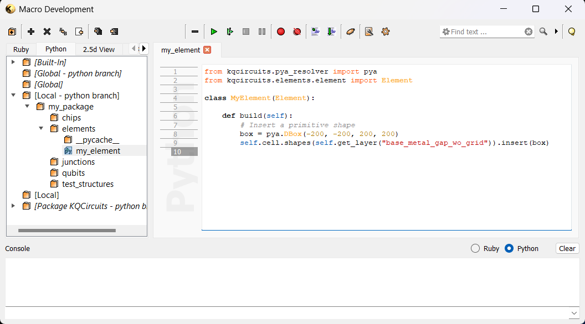

Getting started (Salt package)¶
The easiest way to get started with KQCircuits is to install the so-called Salt package from the KLayout package manager. The Salt package allows you to use all of the KQC features:
Place and use any of the built-in KQC elements and chips
Create your own elements and chips in a user-defined location
Run scripts, define and export simulations, etc.
However, the Salt package itself is read-only, so using this mode does not allow you to modify existing KQC elements or chips. To modify KQC elements, use the Developer Setup instead. It is also possible to migrate to the Developer setup later on, just uninstall the Salt package first.
This guide shows you how to get started with the Salt package, and how to define your own elements and chips.
Installing KQCircuits Salt Package¶
First, make sure you have a recent version of KLayout installed. Open KLayout in edit mode, and select “Tools -> Manage Packages” in the KLayout menu to install the KQCircuits package:

Note that KLayout was started in edit mode, see Usage.
Note
If KQCircuits is not working properly after installation (KQC libraries not visible, running any macro gives an error, etc.), there might be some problem with the specific KLayout version/build you are using, see Known installation issues section for possible solutions.
First look around¶
Once KQCircuits is installed, KLayout will look like this:

In the Libraries panel, you can choose the KQCircuits libraries with Chips, Elements, Qubits, Junctions and Test structures. You can drag these elements from the library to the drawing area to place them. After placing an element, press
*and F2 to make sure everything is visible.In the Layers panel, the KQCircuits layers are defined. They are grouped by face, most things are drawn in the 1t1-face by default.
See GUI Features for more information on placing and using elements in the graphical user interface.
Setting up a user package directory¶
To create your own elements and chips, you have to set a directory as user package. In KLayout, choose the KQCircuits -> Add User Package menu entry, and fill the following dialog box:

Packages have a name and a directory linked to it. The package name should be a single lowercase word, possibly with
underscores. The directory can be anywhere on your system. Click Add to complete the setup.
Note
After setting up a user package, close and restart KLayout for the changes to complete.
If you choose a new directory for the user package, subdirectories for all KQC libraries are created automatically. You can view the user package content in the Macro Editor (press F5), under Python, [Local - python branch].

Note
To remove a user package, use the KQCircuits -> Remove User Package menu. This will remove links to the package, but it will not delete any actual files.
Defining a custom element¶
Here, we will show an example how to create your own element. After following this example, see Python workflow tutorial for more detail on coding elements and chips.
Each element must be placed in a new python file in the directory corresponding to the correct library, and inside the file a single class is defined.
For example, to create an element called My Element, right click the elements directory in the macro editor
and click New. Choose Plain python file, and name it my_element. In the new file, place the definition of
the MyElement class.
Note
The python file name and element class name should match. In the file name, use lower case and underscore to separate words. In the class name, use a capital letter for each first letter of a word.
The following code is an example element definition:
In the code above, we define the MyElement class with a single method build. Inside the build method, we
define any code needed to draw the geometry. In this example, a square (box) is placed in the base_metal_gap_wo_grid
layer.
After editing the code, save the changes (Ctrl+S), and in the KLayout main window choose the
KQCircuits -> Reload libraries menu item. Now, the element will appear in the Elements library, and you can
place it by dragging and dropping to the drawing canvas. As usual, after placing the element press * and F2 to
make sure everything is visible.

Note
Each time you make changes to an element in the Macro Editor, you must Reload libraries for the changes to appear. If there are errors in the code, you may get an error message while reloading.
Defining a custom chip¶
Next, we will define a custom chip that uses our new element. The process is the same as with elements, just create
the file in the chips directory.
Here is an example to create a chip:

Note, that for standard KQC elements we use the import statement from kqc.elements..., but for our custom elements
we import it from our user package, in this case from my_package.elements....
After saving the chip and reloading libraries, the new chip appears in the Chips library:

For more information on coding elements and chips, see Python workflow tutorial. Also see the API documentation for details on the built-in elements and chips available in KQCircuits.
Upgrading or Removing Salt Package¶
After upgrading the KQCircuits Salt package, KLayout needs to be restarted. See the release notes for further details.
Downgrading or upgrading several steps at once is not guaranteed to always work. Upgrading KQC usually works but the safest approach is to uninstall KQC and then install a new version.
Release Notes¶
Here we list particular quirks of specific KQCircuits Salt packages. For a full list of changes see the code repository.
Version 4.5.0 is broken
Version 4.1.0 requires full reinstall of KQC. Qubits directory has moved, to remove the earlier version we need to first remove KQC then install the new version.
Version 4.0.0 requires full reinstall of KQC. Several files have been relocated, without a full reinstall multiple versions of the same file will be left behind.
Version 3.3.0 needs manual install of
tqdmPython module.